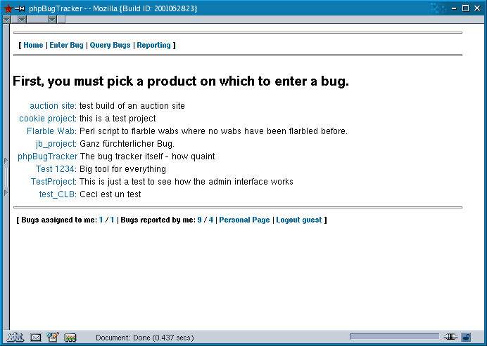

Chapter 1. User's Guide
1.1. Getting Started
1.1.1. Creating an account
You can create a new account by following the link labeled Open a new account. To create a new account you will need to enter at least a valid email address (so that your password can be mailed to you). Providing your name is optional, but if you submit it then your name will appear with bugs you submit and comments you make. If the system has been configured to use a login separate from the email address, you will also be prompted for a login. If you have chosen an email address (or login) that is already in use, you will be prompted to choose a different one. After completing this form, your password will be mailed to you. Once you have received your password you can then login with your email (or login) and password to be able to submit bugs.
1.1.2. Entering a bug
Once you have logged in to the system you can follow the Enter Bug link from the top navigation bar to create a new bug. If there is more than one project for which you can submit a bug, you will be prompted to choose one.

Selecting a project for a bug report.
Once you have chosen a project, or if there is only one project in the system, you will see the bug entry page. The Version and Component fields allow you to specify details about which part or version of the product that produces this bug. The Summary field should be a short but specific summary of the problem, while the Description field should include details about the behavior observed, how that behavior differs from expected behavior, and the steps to reproduce the problem. If the product being tested is web-based, you can use the URL field to provide a link directly to the problem. The Add another checkbox, if checked, will present another bug entry form when you submit a bug, instead of taking you to the bug list.

Entering a bug report.
That's it! The bug has been entered, and it's ready to be reviewed and fixed by the developers.